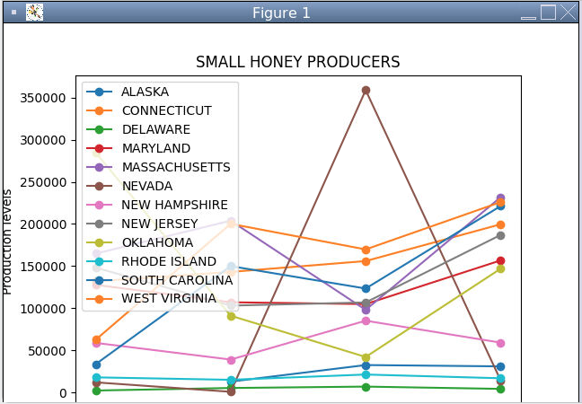

This is my Portfolio Page!

This was an image from my 1.1.9 project. For our project, Sakina and I created game called "Feelings of the Day" We used user input to decide what image to display. Our options included happy, sad, embarrassed, and angry. We struggled to include motion therefore for the images we included GIFs.

For this prokect Katelyn and I made a game that allows you to choose which toppings you would like on your burger then they will fall from various places in the sky. Then you are able to move the burger to catch the toppings.

This is an image from my scratch project with Anthony. For our project we made a cup shuffle game where there is a countdown. A pufferfish is hidden under one of three cups then the cups shuffle and you have a certian amount of time to click on the correct cup with the pufferfish under it.
This is an image from my 3.1.6 lab. For this lab we had to graph data from different biomes. Based off of the data, we had to guess which biome was which.



 This was Ben and my 4.1.4 project. This is one of the slides in the slideshow and also a picture of the answered question that contains the material in the slideshow. We looked at various environmental things and were able to answer effects on the environment. Our part showed at what rate mammoths are going extinct due to human causes.
This was Ben and my 4.1.4 project. This is one of the slides in the slideshow and also a picture of the answered question that contains the material in the slideshow. We looked at various environmental things and were able to answer effects on the environment. Our part showed at what rate mammoths are going extinct due to human causes.